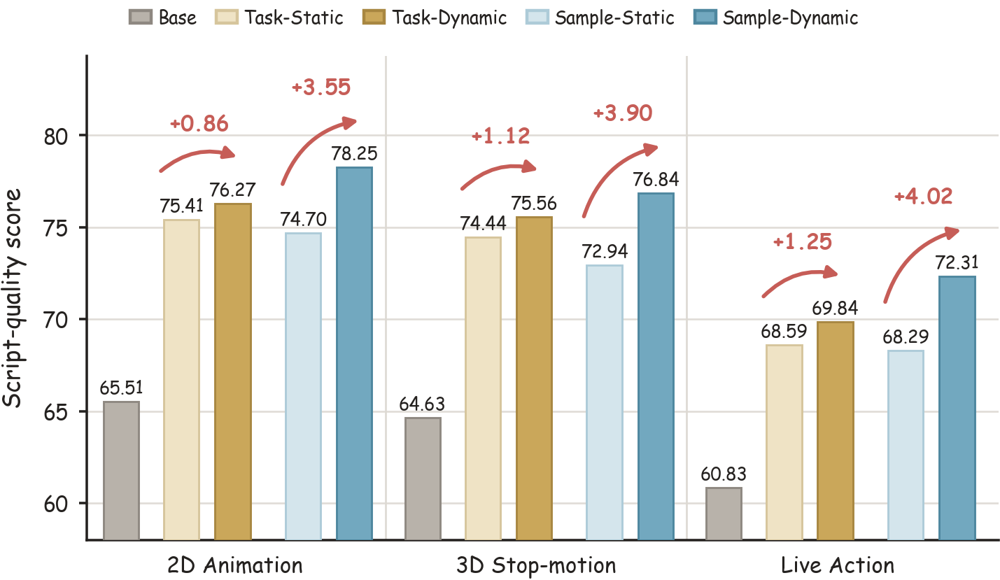

These selected pairs compare the initial model with RARE. Scores
describe individual outputs from the case export; aggregate
comparisons with static-rubric training appear in
Results.
02 / The method
Keep what still teaches. Update what no longer does.
A rubric can become less informative as the model learns to satisfy
it. RARE uses current-policy feedback to decide which criteria
change and what their replacements assess.
01
Generate & evaluate
Sample eight outputs for each query and score them against the
current rubric.
02
Find saturated criteria
Identify criteria that all eight valid judgments score at the
maximum.
03
Refine the feedback
Replace up to three saturated criteria using observed quality
gaps. Retain the others.
04
Learn from the update
Rescore replacements on the same outputs and use the resulting
rewards for the current policy update.
Sample-level adaptive rubric evolution. Click the figure to view it
at full resolution.
What should a replacement look for?
We compare Positive criteria describing desired qualities,
Negative criteria targeting observable flaws, and
Mixed criteria combining both. Negative replacements
perform best across the three script-generation tasks. Higher scores
always indicate better quality.
03 / The results
Better feedback. Stronger generations.
Dynamic rubrics improve their matched static baselines across all
three production styles.
Sample-level · Negative+3.82
mean quality points over Sample-Static
Task-level evolution+1.08
mean quality points over Task-Static

Main paper results on a 0–100 scale. RL results average four
training seeds; mean gains average the three task scores.
Sample-Dynamic uses Negative replacement.